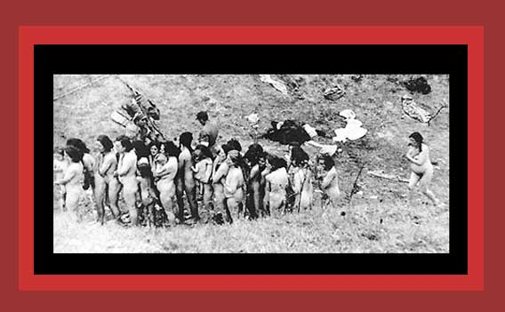

| This is a photo of Jewish women, some of whom are holding infants, and children who had been forced to strip and then wait in a line to be murdered by Ukrainian auxiliary police, an arm of German forces. Documentation: Democide: Nazi Genocide and Mass Murder. Source: "The Undeniable Holocaust." From Main Commission for the Investigation of Nazi War Crimes, Warsaw, Poland. |